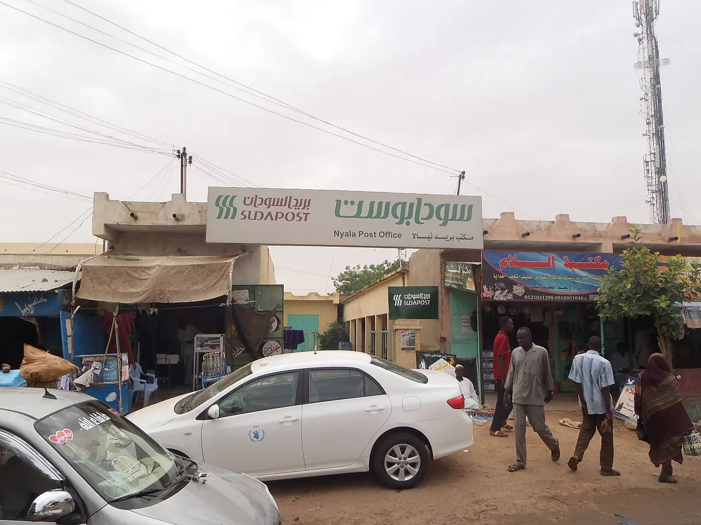
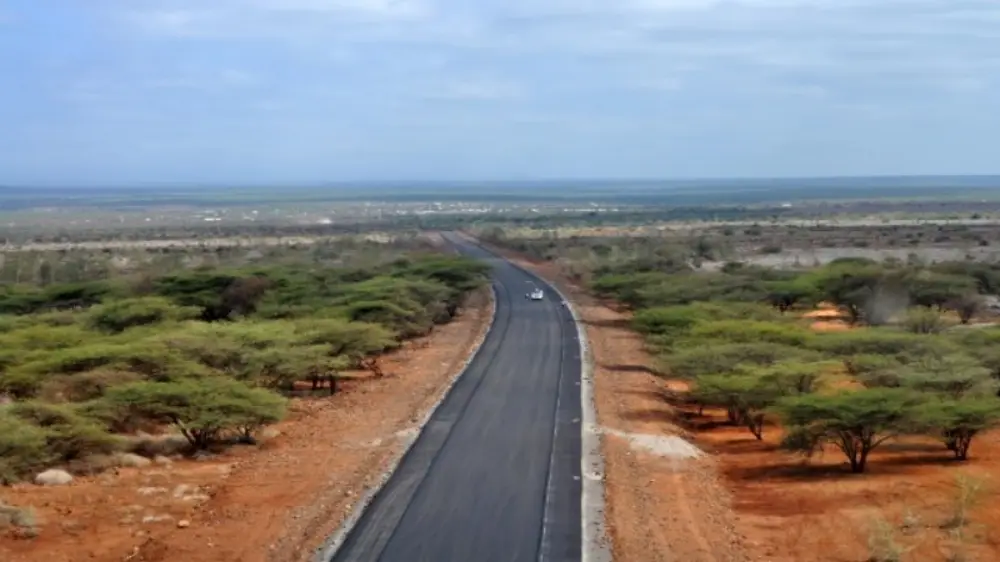
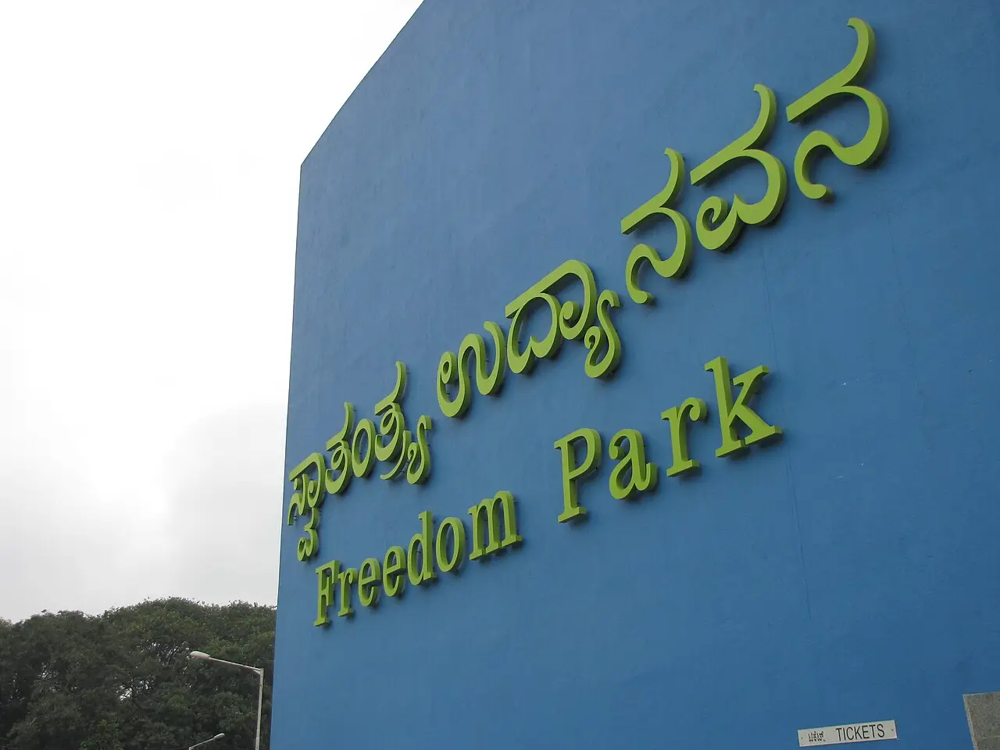
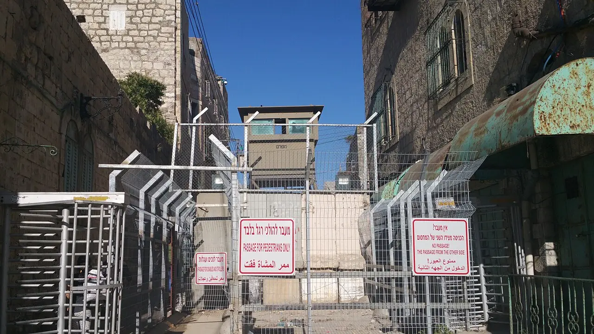

Resistance Daily
Where people's rights were at risk in the last 24 hours. Non-partisan, and every fact links to its source.

Which rights were at risk
Each place is listed onceLife & safety

File photo · 2012A market street with the post office in Nyala, South Darfur, years before the war. Photo: Leovdvxxx / Wikimedia Commons, CC BY-SA 4.0 Nyala, South Darfur, Sudan36+ killed, MSF saysDrone strike on Nyala market kills dozens
A drone strike on a busy market in Nyala, South Darfur, on Monday evening killed at least 36 people and wounded over 150, MSF said, attributing it to Sudan's army; the rights group Emergency Lawyers says more than 100 died. The army has not commented. The RSF controls Nyala.
MSF · AP via ClickOnDetroit Photos and full story →
File photo · 2025Tents of displaced Palestinians flooded by heavy rain in Deir el-Balah, central Gaza, last winter. Photo: Ashraf Amra / UNRWA, via Wikimedia Commons, CC BY-SA 3.0 IGO Gaza Strip950,000 at flood riskGaza aid paused as Israel shuts crossing
UN aid transport in Gaza was suspended on Tuesday after Israel closed the Kerem Shalom crossing for its election day, the UN says. About 950,000 people live in displacement sites at medium to high risk of flooding as a fourth winter in tents nears.
UN News
File photo · 2015A road leading to Moyale, the town that straddles the Ethiopia–Kenya border. Photo: george kaguangi / Wikimedia Commons, CC BY-SA 2.0 Moyale, Kenya–Ethiopia border36,600 fled to Kenya36,600 flee Ethiopian clashes into Kenya
About 36,600 people have fled fighting between Somali and Oromia regional forces in southern Ethiopia into northern Kenya, the UN migration agency says; nearly 11,000 shelter in a church compound and the rest with host families. Kenya's government leads the response; no statement from Ethiopia's federal government has been reported.
UN News (IOM) · UN News (UNICEF)


Also here: Hebron
Assembly

File photo · 2009The entrance sign at Freedom Park, where a 2021 order confines most Bengaluru protests. Photo: Diham / Wikimedia Commons, CC BY 3.0 (cropped) Freedom Park, Bengaluru, Karnataka26 Nov deadline setGroups set deadline on Bengaluru protest curbs
Civil society groups and unions gave Karnataka until 26 November to withdraw the 2021 order that confines most Bengaluru protests to Freedom Park, or face civil disobedience from 28 November. Home Minister Priyank Kharge says the government is studying other protest sites and does not intend to curb protest rights.
News Karnataka · Oneindia

Also here: Pasighat
Expression

File photo · 2012The entrance to August Kranti Maidan, Mumbai, where the actor joined a protest on 10 October. Photo: Karthikndr / Wikimedia Commons, CC BY-SA 3.0 Mumbai, Maharashtra2 Nov next hearingCourt pauses actor's 'Leave India' notice
The Bombay High Court on Tuesday kept in abeyance until 2 November a notice telling actor Imran Khan, an OCI cardholder, to leave India by 28 October after he joined a protest. The Additional Solicitor General sought more time and orally assured the court Khan would not have to leave meanwhile.
Also: Due processLiveLaw · Morung Express

Due process

File photo · 2023The Siang river near Pasighat, where curbs on gatherings remain after the 23 October violence. Photo: Rashid Jorvee / Wikimedia Commons, CC BY-SA 4.0 (cropped) Pasighat, East Siang, Arunachal Pradesh30 central police companiesCurbs stay in Pasighat; detained activist's health worsens
About 30 companies of central armed police are deployed across three Siang districts, and Pasighat's district magistrate says curbs on gatherings stay 'until further orders'. Activist Ebo Mili's family says his health is worsening in custody, where he is reportedly on hunger strike; he denies any role in the arson.
Also: AssemblyThePrint · Arunachal Times Photos and full story →

Also here: Mumbai
Land

File photo · 2015An Israeli checkpoint at Tel Rumeida in Hebron, where an Israeli operation has displaced thousands since Saturday. Photo: Makbula Nassar / Wikimedia Commons, CC BY-SA 4.0 (cropped) Hebron, occupied West Bank3,000+ displaced, UN saysUN rights chief warns of Hebron ethnic cleansing
More than 3,000 Palestinians have been forced from their homes in Israel's Hebron operation, begun after two soldiers were killed at a checkpoint on Friday, the UN says. Volker Türk called it collective punishment and warned of 'serious concerns of ethnic cleansing'. No Israeli response to his statement has been reported.
Also: Life & safetyUN News · Arab News

In focus
The full storyAct today
Whatever your politicsCopy for WhatsApp
Resistance Daily, Wed 28 Oct • Nyala: Drone strike on Nyala market kills dozens • Pasighat: Curbs stay in Pasighat; detained activist's health worsens • Mumbai: Court pauses actor's 'Leave India' notice • Hebron: UN rights chief warns of Hebron ethnic cleansing Sources for every fact, in the full edition: https://resistancedaily.github.io/archive/2026-10-28.html
How we report
- We cover rights, not parties: life, assembly, expression, press, due process, land.
- Every number links to its source, with ground reporting first.
- Official positions appear next to allegations; claims are labelled as claims.
- When sources disagree, we show the range. Maps show land only, with no political borders.
- Photos are freely licensed and credited. "File photo" marks an older picture of the place, not of the event. We blur protesters' and children's faces.